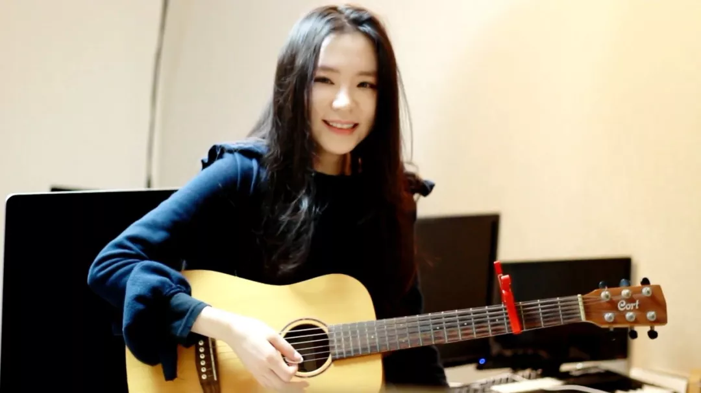

韩文名：김정화
中文名：金贞花
艺名：J.Fla( 제이플라 )
外文名：Jung Hwa Kim （김정화）
国籍：韩国
出生日期：1987年6月10日
职业：YouTuber，歌手，音乐制作人
经纪公司：Ostereo Records（英国）
代表作品：《바보 같은 Story》《Grey Skies》
YouTube更新时间：每周五晚8点（韩国时间9点）后

2009年，J.Fla与日本歌星伊藤由奈合作，参与《Let it go》《Happy Days》的作曲，以作曲家的身份亮相。
2011年8月22日进驻YouTube，并上传第一支翻唱作品《Beyonce - Halo》。
2011年8月来J.Fla发行了各种类型的视频，从「Halo」、Maroon5「Moves Like Jagger」、BIGBANG「BAD BOY」、2NE1「Ugly」，得到了网友的支持，独特的歌声获得了不少粉丝的青睐。
2013年发行首张迷你专辑《바보 같은 Story》正式出道， J.Fla的首张专辑的所有歌曲都由她亲自作词作曲演唱
2017年2月J.Fla接受《与YouTube“音乐创作者”对话》采访中说：“通过YouTube获得了来自海外知名音乐制作人的联系，现在我正在与英国公司签订合同并准备发行音乐”。
2017年5月21日下午2点20分J.Fla在韩国最大的在线音乐网站Melon实时获得第一名。
2017年1月发表的“Shape of You”翻唱视频吸引了众多国内外粉丝，口碑传播到音乐迷中。
2017年10月1日YouTube中“Shape Of You”翻唱视频播放量突破一亿。
2017年10月21日网易云韩国榜歌手排名上升至第一名。
2018年3月2日YouTube中"Despacito"翻唱视频播放量突破一亿。
历史性时刻◕‿◕✿
2017年4月11日YouTube订阅量突破100万
2017年6月20日YouTube订阅量突破200万
2017年8月06日YouTube订阅量突破300万
2017年10月04日YouTube订阅量突破400万
2017年12月06日YouTube订阅量突破500万
2018年1月27日YouTube订阅量突破600万
2018年3月30日YouTube订阅量突破700万
2018年6月8日YouTube订阅量突破800万
中国粉丝关注通道◕‿◕✿
2017年10月31日J.Fla正式入驻网易云与新浪微博。
微博主页ID：@JFlaOfficial
网易云主页ID：@J.Fla
2018年2月28日J.Fla网易云订阅数突破100万
视频原文：
Hello, welcome to my official page on the Netease cloud music.
I'm exciting to show you my latest music at here~
翻译：
大家好，欢迎来到我的网易云官方网页，我很高兴在这里展示我的最新视频~谢谢~

J.Fla最新资讯｜J.Fla粉丝活动

长按二维码关注JFlaStory